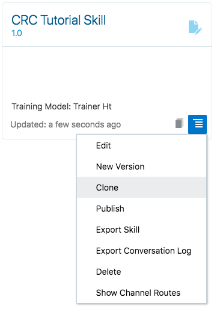
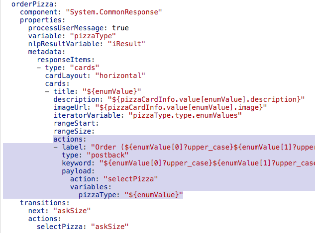
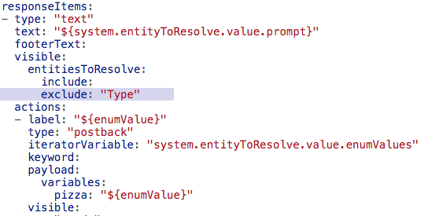
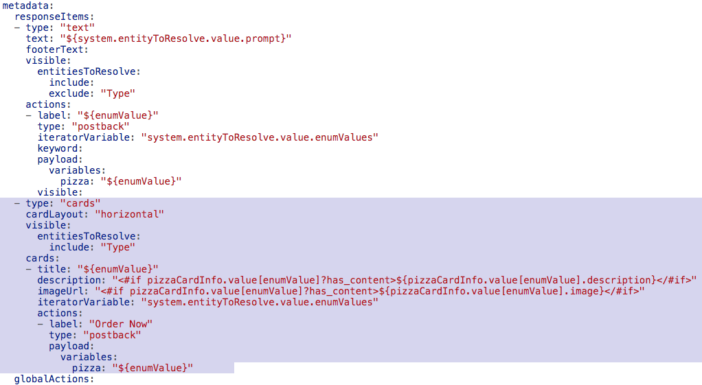

How-to build composite bot responses with the Common Response component
Tutorial by Frank Nimphius, Oracle
March 2019, Oracle Digital Assistant version 19.1.3
Before You Begin
Background
Skills in Oracle Digital Assistant reference components in their dialog flow states to display bot responses and prompt for user input. The System.CommonResponse component is a powerful and flexible component that allows bot designers to create different types of user interfaces, such as: simple text boxes, value lists, card layouts, and complex answers that return media and image content.
In this tutorial you'll learn how to build user interfaces with the System.CommonResponse component that display data stored in dialog flow variables and that update dialog flow variables with user input.
For this tutorial, you need access to an instance of Oracle Digital Assistant Version 19.1.3 or later. Oracle Digital Assistant is available for trial and as a paid subscription. If you do not have access to Oracle Digital Assistant, visit the Oracle Digital Assistant website
Download the Oracle Digital Assistant starter skill bot from here: CRCTutorialSkill (zip)
Getting Ready
The use case in this tutorial is a pizza bot. The starter skill you downloaded for this tutorial contains intents and entities, as well as a starter dialog flow.
Importing the starter skill to an Oracle Digital Assistant
If you work in your own Oracle Digital Assistant instance, then you import the starter skill and use it for the tuorial. In a shared trainings environment, the starter skill most like exists already. In this case you need to clone it before you can run the tutorial.
Open the Oracle Digital Assistant browser based dashboard by pointing your browser to <your instance url>/botsui.
Select the menu icon at the top-left of the page next to the "Oracle Digital Asisstant" label ().
Select the Skills option in the Development category.
Again, click on the menu icon at the top-left of the page to close the menu ().
Click the Import Skills button on the top right ().
On your computer, browse to the location you saved the dowloaded CRCTutorialSkill(1.0).zip file to.
Select the CRCTutorialSkill(1.0).zip file and click Open to upload and install the starter skill bot.
Locate the CRC Tutorial Skill and open it by clicking on the CRC Tutorial Skill tile.
Note: If you cannot find the CRC Tutorial Skill starter skill, then try and use the filter field above the New Skill tile to find it.
Cloning the starter skill
If you are running this tutorial in an environment that is shared with other users, like in a training, you will need to clone the skill before you can use it. The reason is that you can only import a skill with a specific name once. So, if you work in a shared environment, then ...
Open the Oracle Digital Assistant browser based dashboard by pointing your browser to <your instance url>/botsui.
Select the menu icon at the top-left of the page next to the "Oracle Digital Asisstant" label ().
Select the Skills option in the Development category.
Again, click on the menu icon at the top-left of the page to close the menu ().
If you cannot spot the 'CRC Tutorial Skill' starter skill, then try and use the filter field above the 'New Skill' tile to find it. If still you cannot find it, import the skill as explained in the previous section.
To clone a skill, select the menu icon on the CRC Tutorial Skill tile and select the Clone menu item as shown in the image below.

In the opened dialog, provide a display name with your initials in it (e.g. "FN_CRC Tutorial Skill").
Optionally, provide a description.
Create the clone and open it to start the tutorial.
Exploring the starter skill
If not open already, open the intent builder by selecting the Intents menu icon ().
There are two intents created for you: Welcome and OrderPizza. The 'OrderPizza' state resolves pizza orders from user input messages using natural language processing (NLP). For this, the intent has two entities configured: PizzaType and PizzaSize.
To train the skill, click the Train link in the upper right part of the header().
In the opened dialog, keep the default settings and press the Submit button. Training the model may take a second or two.
To test the intent model, click the Try It Out! link in the upper right corner.
Type 'I like to order a large pizza pepperoni' (without quotes) into the Message field and press the Send key.
Note that the intent tester indicates the 'OrderPizza' intent with a probabily of 100% and that both entities, 'PizzaType' and 'PizzaSize' could extract their values from the user input.
Press the Reset botton in the tester header and type 'Gimme a pizza supreme' (without quotes).
Note that the returned confidence level for the 'PizzaOrder' intent. This time, however, only one of the two entities could be extracted from the user message, so that the bot dialog flow would need to explicitly ask for the pizza size to order.
Close the intent tester by clicking the close button ().
Select the entity icon from the menu ().
Notice the 'CheeseType', 'NoToppings', 'PizzaCrust', 'PizzaSize', 'PizzaToppings' and 'PizzaType' entities that contribute the information required for a pizza order. The 'Pizza' entity is a composite bag entity that groups individual entities to a logical until, like a business domain object. The 'Pizza' composite bag entity is used at the end of this tutorial.
Next, open the dialog flow editor (). Note the existing dialog flow states to handle the user intents and unresolved intents.
And now it is your turn to complete the pizza order flow using the System.CommonResponse component.
Building A Conversation Using Text Prompts
In this section you'll create a bot-user conversation that uses text prompts for the user to name a pizza type and the pizza size. Both text prompts are built using the System.CommonResponse component. To print the user choice, you create a confirmation dialog flow state that uses the System.Output component.
Creating the orderPizza state
In the dialog flow editor, press the green + Component button on top of the editor window ().
In the opened popup dialog, select the User Interface category ().
In the User Interface dialog, select the Common response - text menu entry.
Ensure the Insert After select list is set to unresolved, so the new component dialog flow state gets added to the end of the file.
Switch the Remove Comments toggle to on so the template content is added without its comments.
Click Apply to close the popup dialog.
Change the name of the added dialog flow state from textResponse to orderPizza.
Change the orderPizza state so it looks like shown in the image below.
Note: The table below explains the properties you set on the System.CommonResponse component
Property
Use
variable
Value references the dialog flow variable that is updated with the user input
nlpResultvariable
References a dialog flow variable of type nlpresult (iResult in this tutorial). The variable reference is used to suppress component rendering if the pizzaType infromation could be extracted from natural language processing.
processUserMessage
If set to true, then the System.CommonResponse component displays as an input component. If set to false, the component behaves like an output component.
Creating the askSize state
Press the green + Component button on top () of the dialog flow editor.
In the opened dialog, select the User Interface category ().
In the User Interface dialog, select the Common response - text menu item.
Ensure the Insert After select list is set to orderPizza.
Ensure the Remove Comments toggle to be switched on.
Click Apply.
Change the name of the added dialog flow state from textResponse to askSize.
Change the askSize state so it looks like shown in the image below.
Edit the component properties as shown in the table below.
Property
Value
variable
"pizzaSize"
nlpResultVariable
"iResult"
text
"What size of pizza do you like?"
Creating the confirmOrder state
One last time (at least for now), press the green + Component button on top () of the dialog flow editor.
In the opened dialog, select the User Interface category ().
In the User Interface dialog, select the Output menu item.
Ensure the Insert After select list is set to askSize.
Ensure the Remove Comments toggle is switched on.
Click Apply.
Change the added dialog flow state name from output to confirmOrder
Add the following string to the text property (including the quotes):
"Your order of a ${pizzaSize.value?lower_case} ${pizzaType.value?capitalize} pizza is on its way"
Add a transitions element as shown in the image below.
Note: The confirmation message contains two Apache FreeMarker expressions "?lower_case" and "?capitalize". Apache Freemarker is an open source template language that can be used in Oracle Digital Assistant to e.g. format text messages. In this pizza example, the message values for pizza type and size are read from the entity. The pizza type value is defined all upper case in the entity, while the pizza size is defined with a capitalized first letter.
Both entity values would appear odd when displayed to a user. Using Apache Freemarker, the entity values are formatted such that the pizza type starts with an uppercase letter, followed by all lowercase letters, and the pizza size is printed in all lowercase.
Note: You could also have used the System.CommonResponse component in the 'confirmOrder' state to confirm the pizza order. However, given that you ony needed to print a text message as a confirmation, using the System.Output component is the best choice. Only because the System.CommonResponse component can build any user interface, it doe snot mean it has to be used.
Testing
Before you can test the pizza order skill, ensue your edits are valid and well formatted. For this, press the Validate link on top of the dialog flow editor. ()
Note: If you see any validation errors, hover the mouse over the red error marker on the left margin to learn about the cause. Most likely it is that you got the indenting of elements wrong. The dialog flow editor requires each indenting to be exactly two blank characters. So, counting from the left margin, the first two blanks point to the state name, the next two blanks (blanks 3 and 4)then point to the component, properties and transitions elements. The next 2 indents then point to child elements of the prperties and the transitions elements.
To test the conversation flow, press the embedded conversation tester icon () in the menu bar to the left.
In the Message field type I like to order pizza and press the enter-key on your keyboard.
When prompted for specifying a pizza type, enter pepperoni into the Message field and press the enter-key.
When prompted to enter a pizza size, type large into the message field and press the enter-key on your keyboard.
You should see a confirmation message Confirming your order of a large Pepperoni pizza.
Click the Reset link on the top right of the embedded tester
Then, close the embedded conversation tester by clicking the 'X' located in the upper right part of the header()
Building Select Lists
Though your pizza bot works, the user experience needs some improvement. So, instead of displaying input prompts to the user for providing the pizza type and pizza size information, in this part of the tutorial you are going to display list-of-values instead. Good for you to know that the System.CommonResponse component makes the creation of list-of-values easy.
To build list of values with the System.CommonResponse component, you can start from scratch using the dialog flow builder component templates, or modify the existng text prompt. In the following you are doing both: For the orderPizza dialog flow state you will use the component template, while for the askSize state you are going to extend the component definition with a list.
Displaying a list-of-values for the orderPizza state
In the dialog flow editor, press the components template button ().
In the opened popup dialog, select the User Interface category ().
Select the Common response - text link.
Set the Insert After select field to orderPizza.
Ensure the Remove Comments toggle is switched on.
Press the Apply button.
Delete the orderPizza state so that the textResponse state shows directly under the # TUTORIAL START comment (as shown in the image below):
Rename the textResponse state name to orderPizza.
Set the variable property to "pizzaType".
Set the nlpResultVariable property to "iResult".
Remove the autoNumberPostbackActions and translate properties.
The responseItems element contains two text responses. Remove the first text response by deleting the block of code that is highlighted in the image below.
Edit the remaining text response item to look as shown in the image below.
Click the Validate link on top of the dialog flow editor. If there are any formatting errors, fix them before you progress.
What you just did: Using the System.CommonResponsecomponent, a list of values is created by adding action items to a text response. The following table explains the properties you set and what their values actually do.
Property
Use
iteratorVariable
List items can be created (stamped) from an iterator. The PizzaType entity is of type value list, which means that it has a list of values defined that can be accessed through the pizzaType dialog flow variable.
label
When the list data is read from a value-list entity, then the currently stamped item is accssed through the ${enumValue} expression. An Apache FreeMarker expression ?capitalize is used to create a user-friendly message format form the all-uppercase pizza type names in the entity.
variables
List item actions (postback actions) can update one or many variables when a user taps on an item in the list. In the pizza skill, there is only one dialog flow variable pizzaType that needs to be updated. The string pizzaType: "${enumValue}" assigns the current iterator value to the variable. So if, for example, a user taps on the "Pepperoni" list item, the value 'PEPPERONI' is saved to the dialog flow variable.
Testing
Before building the list-of-values for the askSize state, let's have a quick test of the orderPizza list-of-values.
Open the embedded conversation tester ().
If needed, click the Reset link located in the header ().
In the Message field, type "I like to order pizza".
You should see the following response:
Select a pizza from the list, e.g. Meat Lover.
When prompted for a pizza size, typelarge and press the enter-key.
You should see a confirmation message containing the selected pizza type and pizza size you entered
Reset the conversation in the conversation tester.
Close the tester window by clicking on the 'X' icon.
Note: Skill users can also use the Message field of the tester to type the pizza type value. The list-of-values is only an additonal, more user-friendly, option to provide user input.
Displaying a list-of-values for the askSize state
At current, the askSize state renders as an input prompt. In this section you are extending the prompt response to also show a list-of-values.
If not still open, open the dialog flow editor and navigate to the askSize state.
Edit the askSize state so it looks like in the image below. The changes you need to apply are highlighted in the image.
Press the Validate button to ensure correct indenting of the added configuration.
What you just did: You extended the System.CommonResponse component in the 'askSize' state with a list of values defined in the actions configuration. The PizzaSize entity too is of type 'value list', so that the list of values can be read from the pizzaSize dialog flow variable. (pizzaSize.type.enumValues)
Testing
Open the embedded conversation tester ().
In the Message field, type "I like to order pizza".
Select a pizza type from the displayed list, e.g. Meat Lover.
You are then prompted for selecting a pizza size. Select one of the values from the list.
You should see a confirmation message containing the selected pizza type and pizza size.
Reset the conversation.
In the Message field, type "I like to order pizza with pepperoni" and press the enter-key.
You should be prompted for providing a pizza size.
Note: You get prompted for selecting a pizza size instead of selecting a pizza type first because the pizzaType information is extracted from the user message using NLP. This actually works because of the nlpResultVariable property of the System.CommonResponse component that you have set to "iResult".
Instead of selecting a pizza size, type"Hmm, I like a large pizza".
You should see a response similar to the response shown in the image below:
Note: The variable property of the System.CommonResponse component of the askSize state references a dialog flow variable of type "PizzaSize". Any value that you provide when prompted for a pizza size is validated against the entity. The text message 'Hmm, I like a large pizza' contains a valid size information (large) and thus the value gets extracted.
Reset the conversation in the conversation tester.
As a last test, type "I like to order a pizza" into the message field and press the enter-key.
When prompted for selecting a pizza, type"salad"
Note: Again, the provided value is validate against the list of pizzas in the entity. Since salad is not a valid entity type, the list of pizza is displayed again.
Reset the conversation in the conversation tester.
Close the tester window by clicking on the 'X' icon.
Using keywords to select list items
Both dialog flow states, orderPizza and askSize, use stamped actions to render the list items. The action definition contains a keyword property, that has an empty value assigned. Keywords allow you to define shortcuts that users can type into the message field to select an action (a list item). You can define a keyword or a sequence of keywords concatenated with a comma. E.g. keyword: "l,L,grand,max" to provide shortcuts that select a large size for a pizza.
In this tutorial, the value list is dynamically created from values provided by the PizzaType and PizzaSize entities. This means that keywords need to be generated from the list-of-values content. Next, you are creating keywords for the askSize state
Navigate to the askSize state.
Add the following string as a value to the keyword: property:
The askSize state should now look like shown in the image below
Click the Validate button to ensure correct formatting and indenting.
What you just did: You used Apache Freemarker expressions to define keywords as the first letter of the pizza size value (e.g. "L" or "l" for "Large"), as well as a numeric value, which matches the position of the item in the list (e.g. 1 for "Large", 2 for "Medium")
Testing
Open the embedded conversation tester.
In the Message field, type I like to order pizza..
Select a pizza type from the displayed list, e.g. Meat Lover.
You are prompted for selecting a pizza size. Notice the different look of the list labels.
Instead of selecting a value from the list, type e.g. L and press enter. You should see a confirmation for a large pizza "Meat Lover".
Reset the converation.
In the Message field, type I like to order pizza.
Select a pizza type from the displayed list.
When asked for a size, type the numeric value 2. You should see a message confirming that you ordered a medium size pizza.
Reset and close the embedded conversation tester
On your own
You added keyword support for the askSize dialog flow state. It is now on you to do the same for the orderPizza state. This, however, comes with a challenge. The list-of-values in the orderPizza state continues values with the same initial letter. So, to create a unqiue shortcut, your implementation should use the first two characters of a pizza type name as the keyword.
This should not take more that 10 minutes for you to build.
Creating a Card Layout
Messengers like Facebook and the Oracle Digital Assistant Client SDK for JavaScript, support rich user interface components. A popular layout with these messengers is the cards layout. Cards layouts can print ards vertically, or horizontally as a carousel of cards. In this part of the tutorial will change the orderPizza state to render pizza types using cards with images.
Displaying pizzas in cards
Create a new line under the states: element in the dialog flow.
Paste the content into the dialog flow and align it so it looks like shown in the image below.
Note: Each indent is exactly two blank characters.
Press the Validate button to ensure your dialog flow is well formatted after adding the code from the file.
Delete the orderPizza state.
Scroll to he top of the dialog flow builder and click the + Components button ().
In the component template popup dialog, select the User Interface category and then the Common response - card menu item.
Set the Insert After list value to unresolved.
Ensure the Remove Comments toggle is enabled abd press Apply.
Rename the cardResponse state name to orderPizza
This tutorial does not need all of the System.CommonResponse component properties. Edit the orderPizza state so it looks as shown in the image below .
Press the Validate button to ensure the component state to be valid.
Edit the pizzaOrder state following the instructions in the table below. The image below the table provides you with a visual clues of how ths should look in the end.
Property
Value
Action
Create the variable property below the processuserMessage property.
variable
"pizzaType"
Create the nlpResultVariable property below the variable property.
nlpResultVariable
"iResult"
cardLayout
"horizontal"
iteratorVariable
"pizzaType.type.enumValues"
title
"${enumValue}"
description
"${pizzaCardInfo.value[enumValue].description}"
imageUrl
"${pizzaCardInfo.value[enumValue].image}"
cardUrl
Delete property
payLoad-->action
"selectPizza"
Set action property in payload element to "select'Pizza"
label
"Order ${enumValue?capitalize}"
user.someVariable
Change name to pizzaType
pizzaType
"${enumValue}"
The orderPizza state should now look as shown in the image below.
Edit the transitions: element so it looks as shown in the image below.
With all these changes, the orderPizza state should now look like shown in the image below.
Press the Validate button to ensure all formatting and indenting is still valid.
What you just did: In this section, you changed the bot response rendered by the System.CommonResponse component from a list type to a cards layout.
The "LoadPizzaCardInfo" state you copied from the provided pizza_menu.txt file uses Apache FreeMarker expressions to build a pizza menu object. In a production system, this object would be queried from a remote service using a custom component and then saved into a dialog flow variable.
As before, the card layout uses an iterator (the enum values of the PizzaType entity) to print the individual cards. The pizza names are used as a key name in the pizza menu object (pizzaCardInfo) to retrieve the image URL and description.
The actions element defines the buttons to be placed on a card. In the tutorial, each card is rendered with a single button to order the displayed pizza. Pressing the button updates the pizzaType variable with the name of the pizza. At the same time, the selectPizza custom action is followed. The selectPizza custom action is mapped to the askSize state, so navigation continues to asking for the pizza size.
Why is the "next" transition set to the same dialog flow state as the "selectPizza" transition? The selectPizza action transition is followed when a user clicks the button on a card. However, if the initial user message contained the name of the pizza to order, in which case natural language processing extracts it, then the next transition is followed. Selecting a button action may result in a diferent dialog flow state to be visited, which is why it is good practice to define a separate action transition for it.
Testing
Open the embedded tester ().
Reset the conversation if needed.
TypeI like to order pizza into the Message field and press the enter key
Use the navigation arrow displayed on the right side of the card to navigate to the second pizza.
Press the Order button
Select a pizza size. You should see a conversation history similar to the one shown in the image below
Reset the conversation ().
Type I like to order a pepperoni pizza into the Message field and press the enter-key.
Notice that the card layout with the pizzas does not show and you are directly asked for the pizza size. This is because of the variable and nlpResultVariable properties you set on the System.CommonResponse component.
Reset the conversation and close the embedded conversation tester.
Adding keyword support to the cards
When working with card layouts, it is not the card you select to perform a selection, but the button(s) displayed on a card. In this tutorial, each card displays a single button for ordering the displayed pizza. Following the next steps, you will implement keyword support for buttons in the cards.
In the orderPizza dialog flow state, replace the label property value contained in metadata --> cards --> actions with the following string:
The card actions configuration should look similar to the highlighted section in the image below:

Open the embedded tester.
Type I like to order pizza into the message field and press the enter-key. The pizza menu should display as shown in the image below.
Note the (CH) in the "Order (CH)EESE BASIC" card button label.
Type ch into the message field to order a cheese pizza.
Press the enter-key.
Select large as the pizza size when prompted for it. The bot should confirm your order of a large cheese pizza.
Reset the tester.
Type I like to order pizza into the message field and press the enter-key.
With the CHEESE BASIC pizza card displayed, type pe into the message field and press the enter-key.
Type l into the message field when asked for the pizza size and press the enter-key. The bot should confirm your order of a large pizza Pepperoni.
Reset and close the tester.
Note: There are two observations with this latest exercise. Firstly, the keyword uses two letters to make a pizza selection. This is because two pizzas, pepperoni and premium, start with a "P" as the first character. So a single letter keyword does not work. Secondly, the keyword selection does work even if a card is not displayed. Note, however, that if you use page ranging to reduce the number of cards rendered at a time (some messengers like Facebook require this), then only those cards can be accessed with a keyword shortcut that are within the current page range.
Working with Composite Bag Entities
Composite bag entities are explained in the "Using Composite Bag Entities for Real-World Entity Extraction" tutorial. In the following you will learn how to use the Sytsem.CommonResponse component to build user interfaces for dialog flow variables that are of a composite bag entity type.
Exploring the composite bag entity
The starter skill for this tutorial provides a Pizza composite bag entity that from here on you will use in your pizza bot. So let's explore the Pizza composite bag entity before starting to build a UI for it.
Open the entiy panel ().
Select the Pizza entity.
Notice the Bag Items section that contains the following items: Type,Size,Toppings, CheeseType, NoToppings, Location and LocationText.
Note: Each item in the bag is either an entity or a variable. When a composite bag entity gets resolved at runtime, then all bag items are getting resolved at once with no extra dialog flow states needed to be defined.
Select the Type entity bag item and click on the pencil icon ()
Browse the opened panel and notice the properties you can set. A lot the properties, like prompts, validation rules and range size, that you normally set as property on a component, are configured in the entity and will be picked up by the component at runtime.
Click the Close button in the upper right corner to return to the composite bag entity panel.
Configuring the OrderPizza intent
Though this tutorial is all about the common response component, it is important to make sure that entity extraction with natural language processing continues working when using the Pizza composite bag entity.
Select the Intent menu option in the menu to the left ().
Remove the PizzaSize and PizzaType entities from the Intent Entities list by clicking on the 'x' icon to their right.
Press the + Entity button.
Scroll the opened list of entities until you find the Pizza entity.
Select the Pizza entity.
Click the Train button in the header to train the model
Select the Try It Out! link to open the integrated intent tester
Type I like to order a large pizza pepperoni into the Message field and press the Send button.
Notice that the PizzaType and PizzaSize entities are resolved within the composite gab entity as well as stand alone.
Close the intent tester by pressing the close button ('X').
What you just did: For natural languages processing to extract entity values from user input messages, you needed to associate the Pizza composite bag entity with the OrderPizza intent. Note that there is no need to associate all the individual entities of a composite bag entity with the intent.
Preparing the dialog flow
Select the dialog flow builder menu item ().
Delete the orderPizza and the askSize dialog flow states.
What you just did: Composite bag entities don't require dialog flow states to be defined for each of its bag items. The System.CommponResponse component will auto-generate the all required flows.
Creating the orderPizza state
Still in the dialog flow, press the + Components button ().
Select the User Interface category.
Select the Common response - composite bag menu item.
Set the Insert After select list to unresolved.
Ensure the Remove Comments toggle is enabled.
Change the name of the added dialog flow state from resolveCompositeBag to orderPizza.
Remove the following properties not used in this tutorial:
Properties to delete
maxPrompts
cancelPolicy
transitionAfterMatch
autoNumberPostbackActions
translate
In the globalActions component section, delete the Cancel postback action. The globalActions configuration should look as shown in the image below:
Change the transitions section to look as shown in the image below:
Edit the following properties with the values (incuding quotes) shown in the table below:
Property
Value
value
pizza
nlpResultVariable
"iResult"
Edit the metadata property so it looks as in the image below. Specifically notice the highlighted change in the action variables.
Change the confirmOrder state's text message from ...
to ...
Note: To save you from typing, below is the complete dialog flow state for you to copy-and-paste. Just ensure the indenting to look like in the image above
confirmOrder:
component: "System.Output"
properties:
text: |-
Your order of a ${pizza.value.Size?lower_case} ${pizza.value.Type?capitalize} pizza with ${pizza.value.Toppings[0]} is on its way.
We deliver wihin 30 minutes to '${pizza.value.LocationText}'
translate:
transitions:
return: "done"
What you just did: In this part of the tutorial you created a dialog flow state to resolve the Pizza composite bag entity.
The component template contains most of the configurations so that the only change required was to set the values for the variable and the nlpResultVariable properties, as well as the the name of the variable to update when a user selects an item (a pizza type or pizza size) from the list.
The orderConfirmation state needed to be changed because the user provided order information is saved in the pizza variable and no longer in the variables created for each pizza type.
Testing
Open the embedded conversation tester ().
Reset the conversation tester if required.
Type I like to order pizza into the Message field and press the enter-key.
In the displayed list of pizzas, select PEPPERONI.
You are then prompted for a pizza size. Select Large as the pizza size.
When prompted for the toppings, type 2.
When prompted for the delivery address, type Home.
The confirmation message displayed in the tester should look as shown in the image below:
Reset and close the conversation tester.
Adding a card layout to the UI rendered for the composite bag entity
Using the System.CommonResponse component with a composite bag entity allows you to create the same user interface you created before using individual entities. In this part of the hands-on you will add code to the pizzaOrder state that renders pizzas in a card layout.
Edit the visible property of the text response item as shown highlighted in the image below. This setting excludes the pizza type from rendering as a text list-of-values.

Edit the orderPizza state and add an additional card response item (the code is provided after the image below). The System.CommonResponse items should look as shown in the image below:
 Note: to save you from typing, please find the OBotML code to copy-and-paste into your orderPizza state. Just ensure the formatting is as in above image.
What you just did: The System.CommonResponse component allows you to create arbitrary complex visual bot responses. For this you can mix response item types to be conditionally displayed, or displayed together. In this part of the tutorial, you added a cards response item to the System.CommonResponse component in the pizzaOrder state that is displayed for the Type composite bag entity item only. The Type bag item is excluded from the text response so it does not also render as a text list-of-values.
Testing
Open the embedded conversation tester ().
Reset the conversation tester if required.
Type I like to order pizza into the Message field and press the enter-key.
The list of pizzas is displayed in a horizontal card layout. Click the Order Now button on the CHEESE BASIC card to order a cheese pizza.
You are then prompted for a pizza size. Select Large as the pizza size.
When prompted for the toppings, type 2.
When prompted for the delivery address, type Home.
The confirmation message should print as before, just showing Basic Cheese as the pizza type instead of Pepperoni.
Reset the tester.
Next, type I like to order a large pizza pepperoni into the Message field. Pause for a second and answer the following question: What is your expectation for what will happen?
Press the enter-key to see if your expectation is met.
What you should see is that the conversation does not render the cards and also does not prompt you for the pizza size. Instead you are prompted for selecting the toppings. This behavior is caused by the nlpResultVariable of the System.CommonResponse component that is set to the iResult variable.
Reset the tester.
Type I like to order pizza into the Message field and press the enter-key.
When prompted to select a pizza type (cards), type Hmm, I like a large pizza pepperoni with mushrooms.
Pause for a second and, again, answer the question about your expectation.
Press the enter-key
The pizza bot should ask your for the delivery address (which hopefully is what you had expected).
Note: Composite bag entities support out-of-order message extraction, which means that if a user provides information that is required by a composite bag item, though he wasn't prompted to provide the information yet, then it is automatically extracted from the user message. This is one of the benefits you are getting from using composize bag entities.
Summary
The System.CommonResponse component is a powerful system component that bot designers can use to build simple and complext bot responses. This tutorial provided a basic overview of the System.CommonResponse component that gets you started in your chatbot UI development. The dialog flow component templates contain pre-defined dialog flow configurations you can use as starters. The component templates also provide comments for each System.CommonResponse component property for you to learn about and try.
Though the System.CommonResponse component is powerful, it does not mean that it is the only tool in your box. As you used the System.Output component to confiem the ordered pizza, you should also spend some time exploring the other user interface components in Oracle Digital Assistant.
 How-to build composite bot responses with the Common Response component
How-to build composite bot responses with the Common Response component Before You Begin
Before You Begin Getting Ready
Getting Ready ).
). 
 ).
). ).
). ).
). ).
). ).
). ). Note the existing dialog flow states to handle the user intents and unresolved intents.
). Note the existing dialog flow states to handle the user intents and unresolved intents. Building A Conversation Using Text Prompts
Building A Conversation Using Text Prompts ).
). ).
).


 )
)
 ) in the menu bar to the left.
) in the menu bar to the left. Building Select Lists
Building Select Lists


 ).
). 


 Creating a Card Layout
Creating a Card Layout


 Working with Composite Bag Entities
Working with Composite Bag Entities )
) ).
).


 Summary
Summary